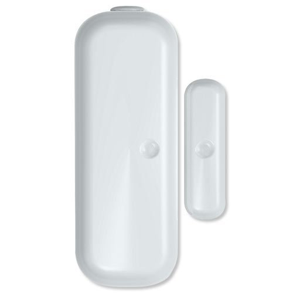

Aeon Labs Door/Window Sensor¶

Brief information¶
- The Aeon Labs D/W Sensor is a battery-powered Z-Wave magnetic door/window sensor with an extremely small form factor. The D/W sensor will send radio signals up to 6 associated Z-Wave devices within its own Z-Wave network when the main unit separates from the smaller unit.
- Bidirectional mounting plate and push button allows for easy end-user installation. The Aeon Labs D/W Sensor also has tamper prevention capabilities and low-battery alerts.
- 1 year battery life 2xAAA battery
- Up to 100 feets/30 metres indoor and 254 feeds/100 metres outdoor
How to add to VENUS app¶
- 1. Activation
- Press “Add button” (button ‘+’) in app
- Remove the plastic pull-tab from the back of device
- Wait for VENUS scan & detect this device and inform in app
- 2. Reset then re-add
- Press “Add button” (button ‘+’) in app
- Pressing z-wave button once to reset
- Pressing z-wave button once again to add
- Wait for VENUS scan & detect this device and inform in app

Wake up information¶
D/W sensor will keep wake up for 8 seconds after it send wake up notification command.
If it receive a command,it will keep wake up for 8 seconds to wait next command.
Press tamper switch 3 times, then D/W sensor will wake 10 minutes.
If configured, d/w sensor will wake 10 minutes too when power on.
- Only 3 ways can abort this status:
- Pressing tamper switch 3 times, sleep right now;
- D/W sensor received “Wake up no more information CC”, sleep right now;
- Received other command, wake 8 seconds to wait next command.
LED indicator¶
- ON: In network
- OFF: Sleeping
- Blink: Out of network
How to add/remove associated device(s) to¶
To add associated device(s) to this sensor, below action is required:
- Add z-wave notified-devices (which will be associated to this sensor) to VENUS
- Select Associate button and then select notified-device(s) to add
- Wake-up this sensor: 1 time press z-wave button
- If successful, pop-up notification displays in VENUS app
To remove associated device(s) from this sensor, below action is required:
- Select Associate button and then select notified-device(s) to remove
- Wake-up this sensor: 1 time press z-wave button
- If successful, pop-up notification displays in VENUS app
Factory reset¶
To reset this device to factory setting, press and hold z-wave button in 20 seconds. LED will blink in 3 seconds to let user know the reset successful.
Configuration description¶
Trigger signal to controller
- Type of signal trigger to controller when magnet switch open/close.
- Available:
- Trigger alarm to controller when magnet open
- Trigger alarm to controller when magnet close
Default: Trigger alarm to controller when magnet open
Parameter 1, 1 byte size
Wake up device for 10 minutes
- This setting enables device to be in waken up state for 10 minutes from power-on.
- Available:
- Enable 10 minutes waken-up from power on
- Disable 10 minutes waken-up from power on
Default: Enable 10 minutes waken-up from power on
Parameter 2, 1 byte size
Trigger signal to associated device
- Type of signal trigger to associated devices when magnet switch open/close.
- Available:
- Trigger ON to associated devices when magnet open
- Trigger ON to associated devices when magnet close
Default: Trigger ON to associated devices when magnet open
Parameter 3, 1 byte size
Trigger report types
- Select kinds of report that device will trigger in case of events.
- Available:
- Trigger event to controller
- Trigger event to associated devices
- Triger event with battery information
Default: all above options are selected
Parameter 121, 4 bytes size.